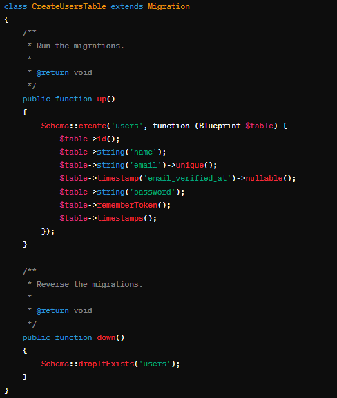
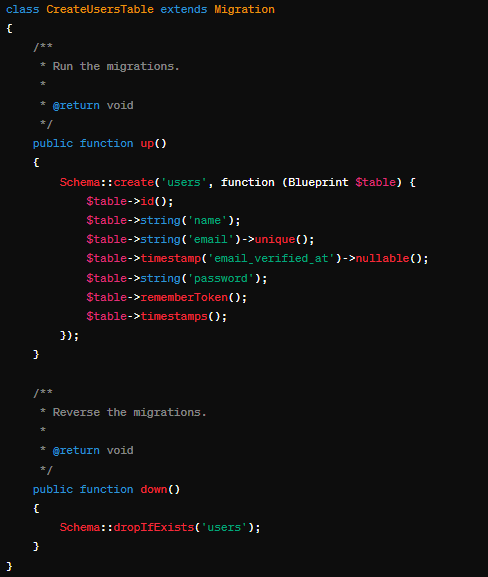

PHP
PHP, langage de programmation omniprésent dans le domaine du développement web depuis ses débuts dans les années 1990, est salué pour sa facilité d'utilisation, sa souplesse et son intégration transparente avec les bases de données. Pourtant, comme tout outil puissant, PHP présente ses propres défis, notamment en ce qui concerne la gestion des performances, particulièrement lorsque le volume de travail est élevé ou lorsqu'il s'agit de manipulations intensives de données. Malgré ces obstacles, PHP a su évoluer au fil du temps pour répondre aux besoins en constante mutation du développement web, grâce à des mises à jour régulières et à l'introduction de nouvelles fonctionnalités.
En tant que langage open-source, PHP bénéficie d'une communauté de développeurs dynamique et engagée qui contribue activement à son développement continu. Cette collaboration a permis de créer un écosystème riche en frameworks et en bibliothèques, dont les plus populaires incluent Laravel, Symfony et CodeIgniter. Ces frameworks offrent une gamme étendue de fonctionnalités avancées telles que la gestion des sessions, la validation des formulaires, et la manipulation des requêtes HTTP, offrant aux développeurs les outils nécessaires pour créer des applications web robustes et évolutives avec une efficacité accrue.
Mon apprentissage dans le domaine du développement PHP a débuté avec le projet VoiceGiver, où j'ai eu l'opportunité de travailler directement avec le langage PHP, sans utiliser de framework. Cette expérience m'a permis d'acquérir les compétences de base nécessaires pour manipuler efficacement le langage et pour comprendre les principes fondamentaux du développement web.
Par la suite, lors de mon stage chez IntelSoft, j'ai été impliqué dans le développement d'une application de gestion de ticket utilisant le framework Laravel. Ce choix s'est avéré être une étape décisive dans mon apprentissage, car Laravel offre une structure robuste et bien organisée pour le développement d'applications web. J'ai été particulièrement impressionné par les fonctionnalités avancées de Laravel, telles que l'ORM Eloquent et la gestion des migrations, qui ont grandement facilité mon travail avec la base de données et la structuration du code.
Néanmoins, le projet n'a pas été sans ses défis. La sécurisation de l'application et l'optimisation des performances ont été des aspects critiques que j'ai dû aborder avec soin. J'ai dû mettre en œuvre des mesures de sécurité strictes pour protéger l'application contre les menaces potentielles, tout en optimisant les performances pour garantir une expérience utilisateur optimale. Ce projet m'a offert une expérience précieuse dans la résolution de problèmes et dans la mise en œuvre de solutions efficaces dans un environnement professionnel.

En conclusion, bien que je possède une expérience solide en PHP, je suis conscient de la nécessité de continuer à apprendre et à évoluer dans ce domaine en constante évolution. Mon objectif est de maintenir mes compétences à jour, de rester informé des dernières avancées et de contribuer activement à la communauté des développeurs PHP, sans nécessairement chercher à devenir un expert en la matière. Je crois fermement en la valeur de l'apprentissage continu et de la collaboration au sein de la communauté pour progresser dans ma carrière de développeur PHP.
En tant que langage open-source, PHP bénéficie d'une communauté de développeurs dynamique et engagée qui contribue activement à son développement continu. Cette collaboration a permis de créer un écosystème riche en frameworks et en bibliothèques, dont les plus populaires incluent Laravel, Symfony et CodeIgniter. Ces frameworks offrent une gamme étendue de fonctionnalités avancées telles que la gestion des sessions, la validation des formulaires, et la manipulation des requêtes HTTP, offrant aux développeurs les outils nécessaires pour créer des applications web robustes et évolutives avec une efficacité accrue.
Mon apprentissage dans le domaine du développement PHP a débuté avec le projet VoiceGiver, où j'ai eu l'opportunité de travailler directement avec le langage PHP, sans utiliser de framework. Cette expérience m'a permis d'acquérir les compétences de base nécessaires pour manipuler efficacement le langage et pour comprendre les principes fondamentaux du développement web.
Par la suite, lors de mon stage chez IntelSoft, j'ai été impliqué dans le développement d'une application de gestion de ticket utilisant le framework Laravel. Ce choix s'est avéré être une étape décisive dans mon apprentissage, car Laravel offre une structure robuste et bien organisée pour le développement d'applications web. J'ai été particulièrement impressionné par les fonctionnalités avancées de Laravel, telles que l'ORM Eloquent et la gestion des migrations, qui ont grandement facilité mon travail avec la base de données et la structuration du code.
Néanmoins, le projet n'a pas été sans ses défis. La sécurisation de l'application et l'optimisation des performances ont été des aspects critiques que j'ai dû aborder avec soin. J'ai dû mettre en œuvre des mesures de sécurité strictes pour protéger l'application contre les menaces potentielles, tout en optimisant les performances pour garantir une expérience utilisateur optimale. Ce projet m'a offert une expérience précieuse dans la résolution de problèmes et dans la mise en œuvre de solutions efficaces dans un environnement professionnel.

En conclusion, bien que je possède une expérience solide en PHP, je suis conscient de la nécessité de continuer à apprendre et à évoluer dans ce domaine en constante évolution. Mon objectif est de maintenir mes compétences à jour, de rester informé des dernières avancées et de contribuer activement à la communauté des développeurs PHP, sans nécessairement chercher à devenir un expert en la matière. Je crois fermement en la valeur de l'apprentissage continu et de la collaboration au sein de la communauté pour progresser dans ma carrière de développeur PHP.